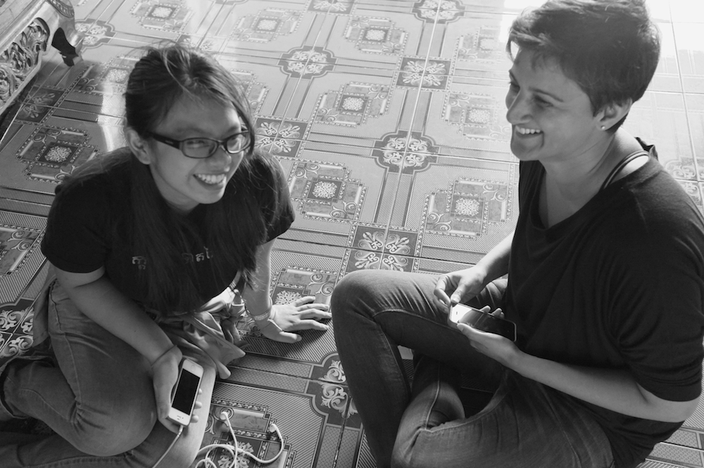

Why Mobile for EVAW?
What is VAW?
Any act of gender-based violence that results in, or is likely to result in, physical, sexual or mental harm or suffering to women, including threats of such acts, coercion or arbitrary deprivation of liberty, whether occurring in public or private life. - Defined by the United Nations
ROOT CAUSES OF VAW
The 1993 Declaration on the Elimination of Violence against Women recognized violence against women as a manifestation of historically unequal power relations between men and women, both arising from and reinforcing gender inequality and discrimination. Society’s attitudes towards and practices of gender discrimination that place women and men in rigid roles and positions of power – with women in a subordinate position in relation to men. The accepted gender roles and lack of social and economic value for women and women’s work strengthen the assumption that men have decision-making power and control over women. Through acts of VAW perpetrators seek to maintain privileges, power, and control over others – this disregard for or lack of awareness about human rights, gender equality, democracy and nonviolent means of resolving problems continue the inequality that leads to VAW.
VAW INTERVENTIONS
Traditional VAW interventions can be divided into Prevention, Protection and Response, and each can be directed at an individual level, community level or societal level.
Prevention:
- Stopping VAW before it occurs or decreasing the likelihood of violence from reoccurring by eliminating underlying causes, reducing risk factors, and strengthening protective factors.Examples: behavior change communication campaigns, efforts to increase community-level safety and security, positive media messaging initiatives, and public service announcements.
Protection:
- Ensuring women’s rights and security and increasing access to justice by improving legal frameworks, promoting judicial action, and ensuring effective recourse. Examples: national action plans, training programs for local authorities, legal information for victims and survivors, and improvements to reporting channels and/or case management systems.
Response:
- The provision of services to victims and survivors such as medical, psychological, and social support. Examples: counselling, shelter, peer support networks, strengthening referral systems, and raising awareness about available services.
MOBILE SOLUTIONS
Mobile phone access is exponentially increasing around the world. While access is still very limited for women in many places, the number of women who have a mobile phone is growing by the day.
This increased connectivity provides new opportunities for women to access peers, resources, and information - and in some cases, has been credited for increased feelings of safety and security. In addition to the basic features of a phone, such as voice calls, individual and group messaging, and contact directories, smartphones also provide opportunities to access the internet and millions of apps. This in turn poses exciting new potential to improve prevention, protection and response initiatives, and support global efforts for EVAW.
A plethora of new apps have been created for this very purpose. Many of them seek to provide ways for women to alert authorities, report violence, or contact help in the case of an emergency. Others collect data or provide information on support services, resource directories and general awareness. Social networking apps have also been used as tools to create support groups, awareness campaigns, and networks of stakeholders. (Learn more about existing EVAW Apps.)
However, just as they can provide a promising tool for survivors and supporting organizations, mobile phones can also provide perpetrators a tool to reinforce control and abuse. According to the APC, monitoring of phone activity, incriminating photos or data, phone and location tracking, and abusive messages, calls and online comments are all increasingly prevalent with mobile phone access. Therefore, equal consideration must be paid to the opportunities and threats that mobile solutions pose. Using discretion and protecting privacy are critical to ensuring mobile solutions do no harm to their end users.